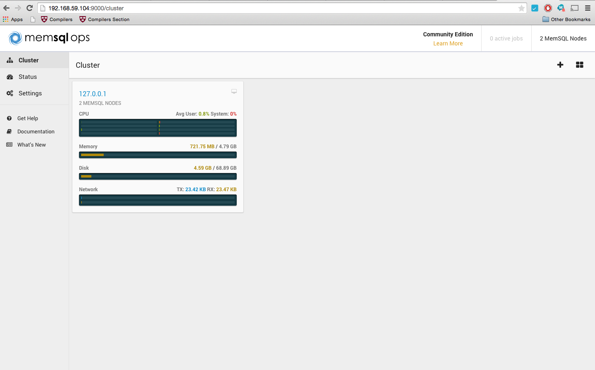

Quick Start with Docker¶
MemSQL supports running a pre-installed quickstart container with Docker. The container comes installed with MemSQL Ops, a single-node MemSQL cluster, and some sample programs referenced in tutorials.
This technique also enables you to easily run MemSQL on your Mac. Your Mac must have at least 4 cores and 8 GB of RAM (4GB to allocate to the container) to run this container.
Install docker (or boot2docker on a Mac)¶
If you are running on a Mac, start by installing boot2docker (http://boot2docker.io/). This guide assumes that docker has been configured successfully, and the following commands run successfully on your machine:
$ docker run hello-world
$ docker run -t -i busybox ls
Quick Start Instructions:¶
Configure VM Memory Size (Mac only):
$ mkdir -p ~/.boot2docker
$ boot2docker config > ~/.boot2docker/profile
$ sed -i '' 's/^Memory[[:space:]]*=.*/Memory = 4096/' ~/.boot2docker/profile
$ boot2docker delete ; boot2docker init ; boot2docker start
Use docker run to run the memsql/quickstart container. The container has a self-contained MemSQL cluster pre-installed, including MemSQL Ops and sample code to test MemSQL. You may need to open a new terminal window after restarting boot2docker to proceed.
First verify that your machine satisfies our minimum requirements:
$ docker run --rm --net=host memsql/quickstart check-system
Then spin up a MemSQL cluster on your machine:
$ docker run -d -p 3306:3306 -p 9000:9000 --name="memsql" memsql/quickstart
Visit the MemSQL Ops web interface (requires Firefox or Google Chrome):
Note
You must use the IP output by boot2docker ip to access your install. You cannot access MemSQL with 127.0.0.1 or localhost.
$ open "http://$(boot2docker ip):9000"
You should see
Connect to MemSQL with the MySQL Command Line Client¶
Use the memsql-shell command to connect to the instance with the MySQL client.
$ docker run --rm -it --link=memsql:memsql memsql/quickstart memsql-shell
memsql> create database test;
Query OK, 1 row affected (0.48 sec)
memsql> use test;
Database changed
memsql> CREATE TABLE test_table (id BIGINT PRIMARY KEY AUTO_INCREMENT, c INT);
Query OK, 0 rows affected (7.77 sec)
memsql> INSERT INTO test_table (c) VALUES (1);
Query OK, 1 row affected (1.07 sec)
memsql> INSERT INTO test_table (c) SELECT c*2 FROM test_table;
Query OK, 1 row affected (2.37 sec)
memsql> INSERT INTO test_table (c) SELECT c*2 FROM test_table;
Query OK, 2 rows affected (0.00 sec)
memsql> INSERT INTO test_table (c) SELECT c*2 FROM test_table;
Query OK, 4 rows affected (0.00 sec)
memsql> INSERT INTO test_table (c) SELECT c*2 FROM test_table;
Query OK, 8 rows affected (0.00 sec)
memsql> SELECT SUM(c) FROM test_table;
+--------+
| SUM(c) |
+--------+
| 81 |
+--------+
1 row in set (2.40 sec)
memsql> INSERT INTO test_table (c) SELECT c*2 FROM test_table;
Query OK, 16 rows affected (0.00 sec)
memsql> SELECT SUM(c) FROM test_table;
+--------+
| SUM(c) |
+--------+
| 243 |
+--------+
1 row in set (0.00 sec)
Connecting to MemSQL with Your Favorite Tools¶
MemSQL is now running and available to connect to from your Mac. This is a great way to run a local development environment to work with MemSQL. You can also connect with your favorite tools, like Sequel Pro.
Run boot2docker ip to get the IP address of the MemSQL Instance.
$ boot2docker ip
192.168.59.104
You can use this IP address to connect from local tools, like the MySQL client on your machine (if you have it installed):
$ mysql -h $(boot2docker ip) -u root -P 3306 --prompt="memsql> "
Note
–prompt="memsql> " changes the prompt in the client program to say memsql>. It is not required for using the MySQL client.
Next Steps¶
Multi-Threaded Queries¶
The docker image contains sample code in Python, with which you can push high numbers of concurrent writes per second (see Concurrent Multi-Insert Examples).
To run it, you can issue the following docker command:
$ docker run --rm -it --link=memsql:memsql memsql/quickstart simple-benchmark
Use the MemSQL Ops UI to observe the transactional throughput of this workload. You can access the UI by running open http://$(boot2docker):9000.
Sample Query Workload¶
See How to Run Queries for an example schema and queries to begin exploring the potential of MemSQL.
Removing the memsql/quickstart Image¶
When you are done testing with the memsql/quickstart image, you can clean it up by running the following command:
$ docker stop memsql && docker rm -v memsql
Extended Instructions to Configure VM Memory Size (Mac Only)¶
Note
This section is an extended guide to configuring the memory limit in boot2docker. If you were successful with installing the docker image above, you do not need to follow the instructions in this section.
On Mac, boot2docker defaults to virtual machines with 2 GB of memory. MemSQL requires a VM with at least 4 GB of memory. This section comprehensively covers how to adjust and verify the minimum memory for the boot2docker virtual machine.
Find the boot2docker config file¶
$ boot2docker config | head -n 1
# boot2docker profile filename: /Users/<user>/.boot2docker/profile
Check if the file exists. If you see the following error:
$ ls ~/.boot2docker/profile
ls: /Users/<user>/.boot2docker/profile: No such file or directory
then run the following steps to create the file:
$ mkdir -p ~/.boot2docker
$ boot2docker config > ~/.boot2docker/profile
Edit the “Memory” setting in the boot2docker config file¶
Open the file, and edit the Memory setting. You should replace the line that says: Memory = 2048 with Memory = 4096.
Alternatively, you can run the following sed command:
$ sed -i '' 's/^Memory[[:space:]]*=.*/Memory = 4096/' ~/.boot2docker/profile
Validate that the Memory value is now 4096:
$ boot2docker config | grep Memory
Memory = 4096
Finally, re-initialize boot2docker to reflect these changes:
$ boot2docker delete
$ boot2docker init
$ boot2docker start
You can optionally verify that the memory changes were successful by SSHing into the boot2docker VM and checking free -m:
$ boot2docker ssh
## .
## ## ## ==
## ## ## ## ## ===
/'''''''''''''''''\___/ ===
~~~ {~~ ~~~~ ~~~ ~~~~ ~~~ ~ / ===- ~~~
\______ o __/
\ \ __/
\____\_______/
_ _ ____ _ _
| |__ ___ ___ | |_|___ \ __| | ___ ___| | _____ _ __
| '_ \ / _ \ / _ \| __| __) / _` |/ _ \ / __| |/ / _ \ '__|
| |_) | (_) | (_) | |_ / __/ (_| | (_) | (__| < __/ |
|_.__/ \___/ \___/ \__|_____\__,_|\___/ \___|_|\_\___|_|
Boot2Docker version 1.6.2, build master : 4534e65 - Wed May 13 21:24:28 UTC 2015
Docker version 1.6.2, build 7c8fca2
docker@boot2docker:~$ free -m
total used free shared buffers cached
Mem: 3952 156 3795 0 1 109
-/+ buffers/cache: 45 3906
Swap: 956 0 956
docker@boot2docker:~$ exit
Note
These instructions are based on the boot2docker configuration instructions.